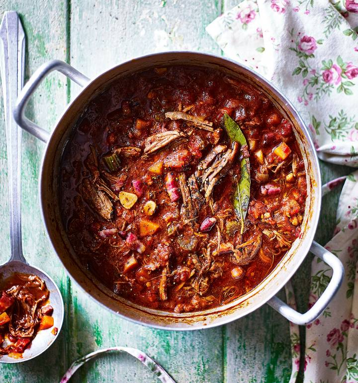

Slow-cooked beef ragout
Recipe by Lucy O'Reilly
Not to be confused with the Italian ragu, which is a meat-based pasta sauce, this hearty, slow-cooked French-style stew is great for freezer-friendly batch cooking.
MAKES: 12 Servings OR 3 900g Portions
PREP TIME: 55 mins
TOTAL TIME: 4 hrs 10 mins
Lucy O'Reilly
Lucy is an inventive freelance food stylist and food writer working in magazines, books and other projects. Former Deputy Food Editor of food magazine Delicious, Lucy now works for an array of clients including; Sainsburys, Good Food and Delicious.
SEE MORE OF LUCY O'REILLY’S RECIPESIngredients:
- 1.8kg (trimmed weight) beef braising steak, chopped into 3-4cm chunks, or 1.8kg diced beef
- 3 tbsp olive oil
- 200g cubetti di pancetta or 180g smoked cubetti di pancetta
- 2 large onions, diced
- 2 large carrots, peeled and finely diced
- 2 large sticks of celery, finely diced
- 5 garlic cloves, crushed
- 3 tbsp tomato purée
- 2 bay leaves
- 200ml red wine
- 800g chopped tomatoes
- 600ml fresh beef stock
Step by Step
- Preheat the oven to 160°C, fan 140°C, gas 3. Season the beef. Add 1 tablespoon of the oil to a large frying pan; brown the beef in batches over a medium-high heat. Using a draining spoon, transfer to a large casserole with a lid, leaving any oil in the pan. Continue to brown the remaining beef, adding a splash of oil to the pan between each batch, and transferring the beef to the casserole when done.
- Add the pancetta to the frying pan and fry until the fat has rendered out, then add to the beef using a draining spoon. Add the onions, carrots and celery to the oil in the frying pan, stir, and cook over a low heat for 10-15 minutes until softened.
- Increase the heat, add the garlic; cook for 2 minutes, then add the tomato purée and bay leaves and cook for 1 minute more. Add the wine; bubble to reduce by half.
- Tip the vegetables into the casserole and add the tomatoes, stock and 150ml water. Season, stir, and bring to a simmer then cover with a lid; transfer to the middle of the oven. Cook for 3-3 1⁄2 hours, or until the meat is tender and the sauce slightly reduced.
- Break up the meat with a couple of forks and stir into the sauce. Portion up as required.